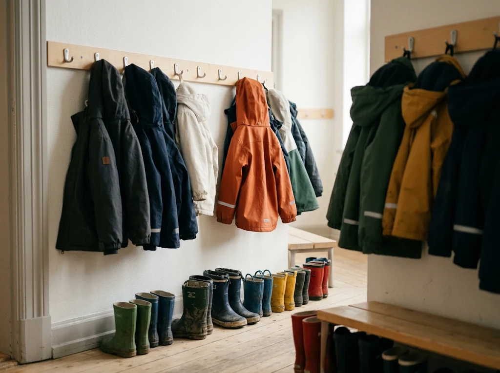

Hjælp til forældre med børn i mistrivsel
Er dit barn begyndt at mistrives i skolen? Er du som forælder i tvivl om, hvordan du bedst hjælper – og hvordan du navigerer i det kommunale system?

Rådgivning og sparring til forældre
Vi tilbyder støtte og konkret vejledning til forældre, der oplever, at deres barn ikke trives fagligt, socialt eller følelsesmæssigt. Gennem individuel rådgivning og sparring hjælper vi jer med at finde vej og skabe kontakt til de rette instanser.
Hos os får I en tryg og respektfuld dialog, hvor bekymringer bliver taget alvorligt, barnets perspektiv fastholdes, og mulighederne for det videre samarbejde undersøges.
Sammen finder vi de rette handlemuligheder for netop jeres barn.
Eksempler på ydelser
- Rådgivning om muligheder i det kommunale system
- Hjælp til at forstå visitationsprocesser
- Forberedelse og støtte til møder med skole og kommune
- Vurdering af relevante tilbud (almen, special, behandling)
- Tolkning af handleplaner og underretninger
- Afklaring af forældres rettigheder og skolens pligter
- Strategisk sparring om, hvordan I bedst hjælper jeres barn
Seks trin fra udfordring til handling
De seks trin gælder for forældre, skoler og kommuner.
Se hele forløbetHvem står bag Næste Skridt?
Vi hedder Christian og Anne, og vi har arbejdet med skoleledelse i både offentlige og private skolemiljøer samt på kommunalt niveau. Vi har særlig erfaring med børn i udsatte positioner, specialundervisning, personaleledelse og strategisk skoleudvikling.
Vores tilgange er både fagligt funderet og menneskeligt forankret. Vi tror på åben dialog, ordentlighed og respekt som grundsten i al udvikling – og vi ved, at ingen løsning er stærkere end det fællesskab, den er skabt i.
Lad os tage en snak.
Skriv kort, hvad det drejer sig om, og hvornår vi kan ringe til jer. Oplysninger om jeres barn tager vi hellere i en samtale end på mail.